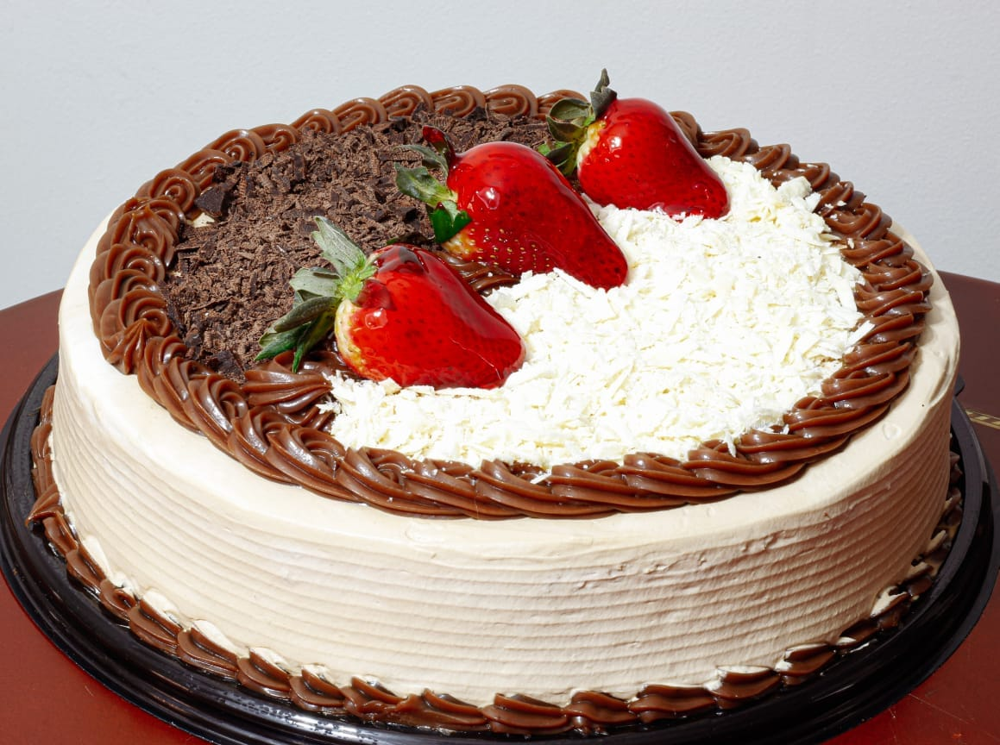
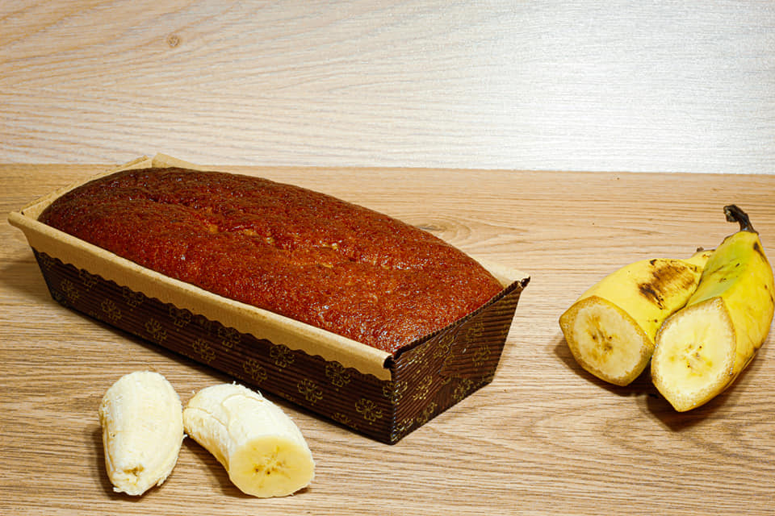
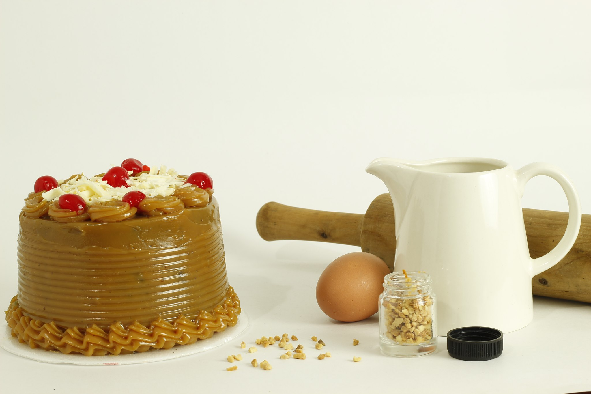

Sabemos que para esos momentos especiales nuestros productos deben de estar a la altura y que mejor forma de corroborarlo que con nuestra magnifica torta envinada de tres pisos para deleitar a todos tus invitados en esta fecha especial.
Sabemos que la decoración te excita y no es para menos, seguro resaltará en la mesa a todos tus invitados, y aún más cierto cuando la pruben, pero descuida, solo tu probaras el acompañante.
Quien dijo que el dulce y el citrico de la fresa no se llevan?, pues esta es la clara representación de que si es posible, nuestra maravillosa torta es el equilibrio perfecto para tu paladar, con una torta fria de tres leches con un relleno de dulce de fresa es sin duda una prueba obligada.
La tradicional torta maria luiza con su caracteristico toque casero te hará recordar las dulces preparaciones de mamá, con gran cantidad de calorias y proteina te dará la energia suficiente para aguantar la fiesta.
Deliciosa torta casera de zanahoria hecha con un excelente porcentaje de fruta, con gran presencia de vitaminas y de un optimo rendimiento. Alcanza para 12 porciones.
Deliciosa torta casera de banano hecha con un excelente porcentaje de fruta, con gran presencia de vitaminas y de un optimo rendimiento. Alcanza para 12 porciones.